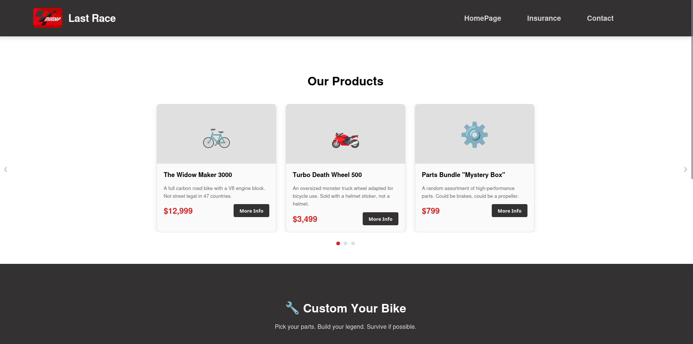
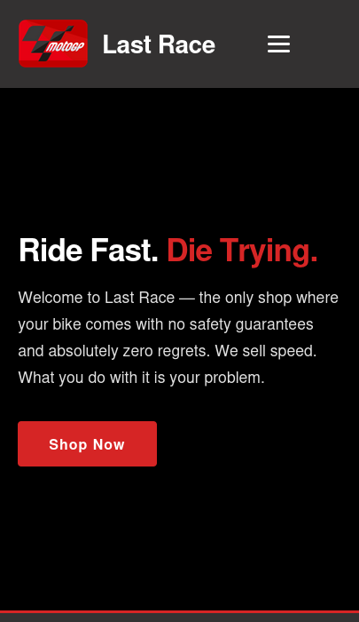
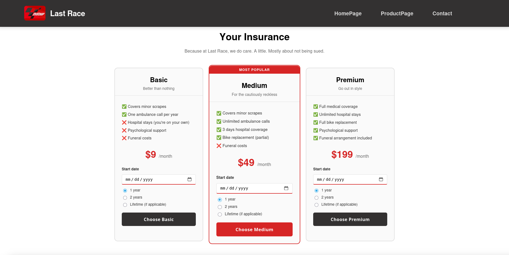

Last Race — Site web en équipe
Dans le cadre d'un projet scolaire simulant une relation client / développeur, j'ai co-conçu un site e-commerce fictif de vélos extrêmes en anglais, avec des contraintes réelles : cahier des charges, dates de rendu, itérations suite aux retours clients et présentation finale devant classe.
🎯 Contexte & objectifs
Projet de 1ère année de BUT Informatique — cours d'anglais professionnel. L'objectif était de simuler une vraie commande client : l'équipe cliente définissait ses besoins, l'équipe développeur devait y répondre en livrant un site fonctionnel, en communiquant exclusivement en anglais (emails, réunions, présentation finale).
🛠️ Ce que j'ai réalisé
- 4 pages HTML complètes : Home, Products, Insurance, Payment
- Système de carousel JavaScript pour les produits
- Configurateur de vélo custom avec dropdowns filtrés
- Page de paiement avec récapitulatif dynamique (localStorage)
- Design responsive avec burger menu mobile
- CSS partagé (
communForAll.css) + CSS spécifique par page
💡 Ce que j'ai appris
Ce projet m'a permis de vraiment comprendre la séparation des responsabilités
entre HTML, CSS et JS. Travailler avec un "client" fictif m'a aussi appris à
lire un cahier des charges, à me rendre du gain de temps qu'on y gagne et à
présenter son travail de façon claire et professionnelle.
La gestion du localStorage pour passer des données entre pages
était un vrai défi — et une vraie satisfaction une fois en place.

